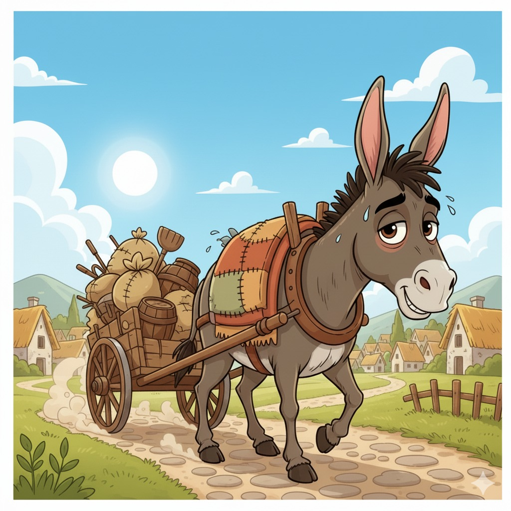
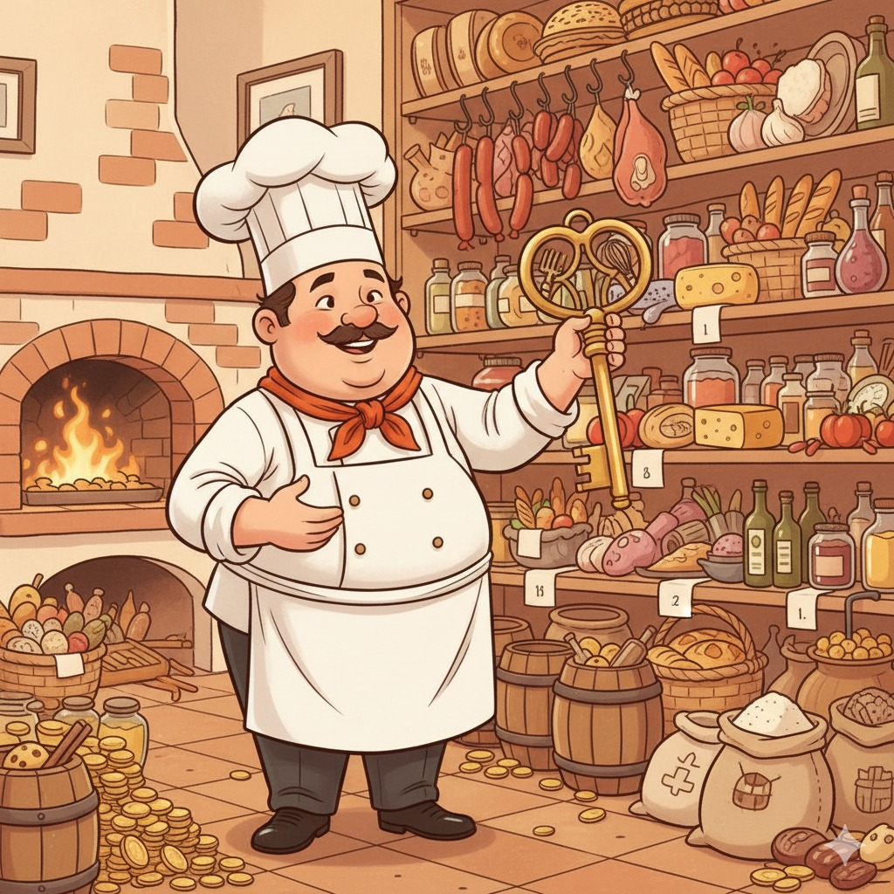
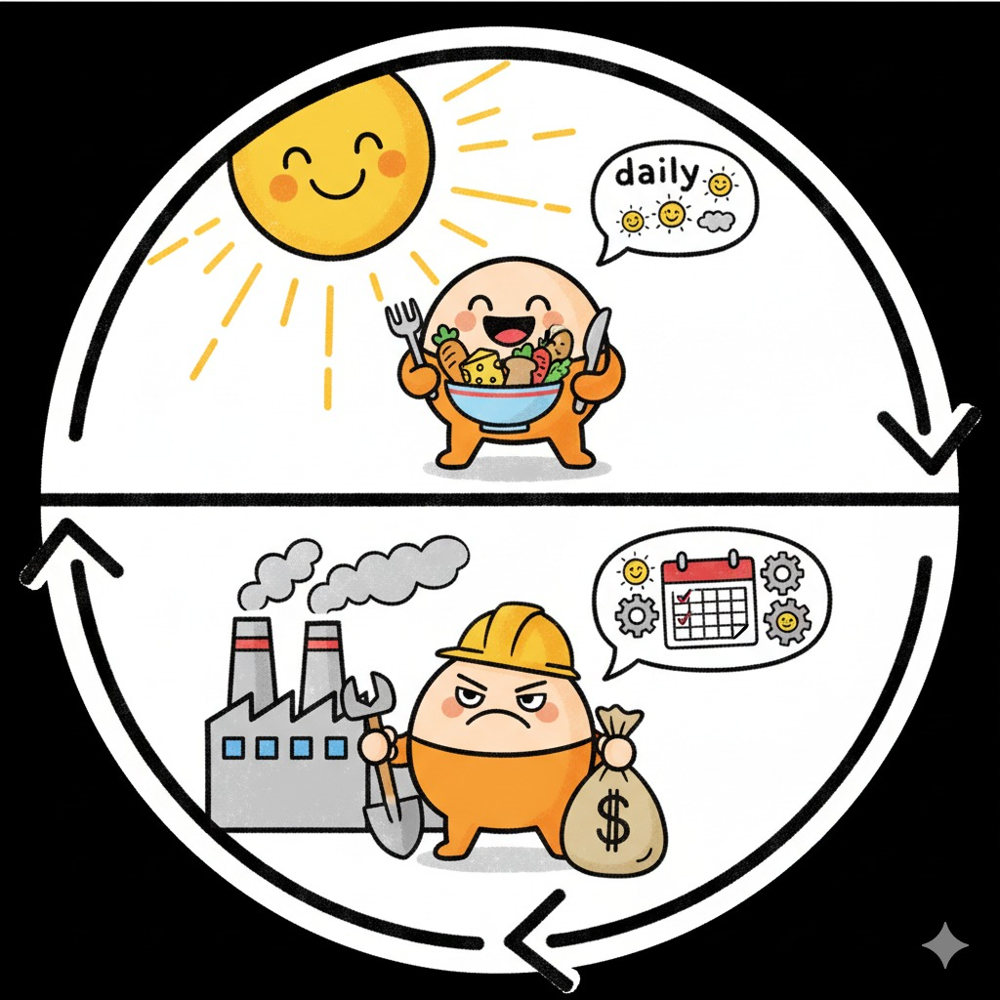

Refranes de Trabajo
El burro que más trabaja, más rota tiene la albarda.
Indica que a pesar de trabajar mucho, algunas personas no obtienen de su trabajo los frutos esperados.
Quien buen oficio sabe, de buena despensa tiene la llave.
Indica que un buen oficio proporciona a la persona abundancia de bienes.
Como el comer es diario, trabajar diariamente es necesario.
Manifiesta la necesidad de la constancia en el trabajo.